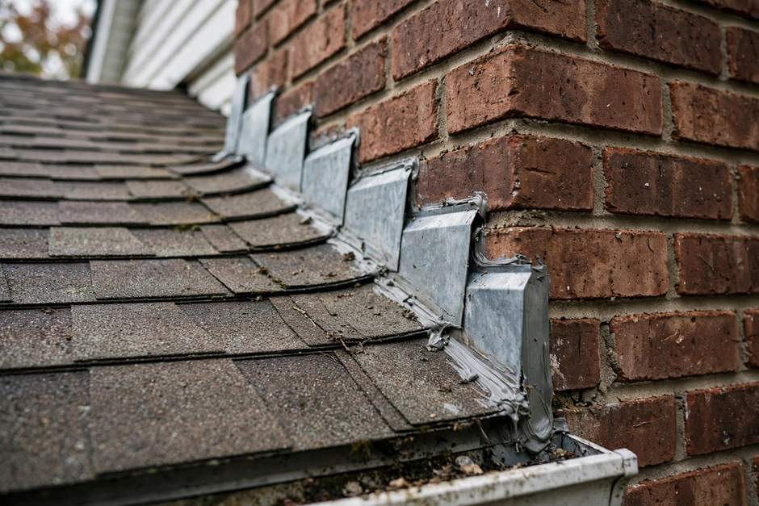
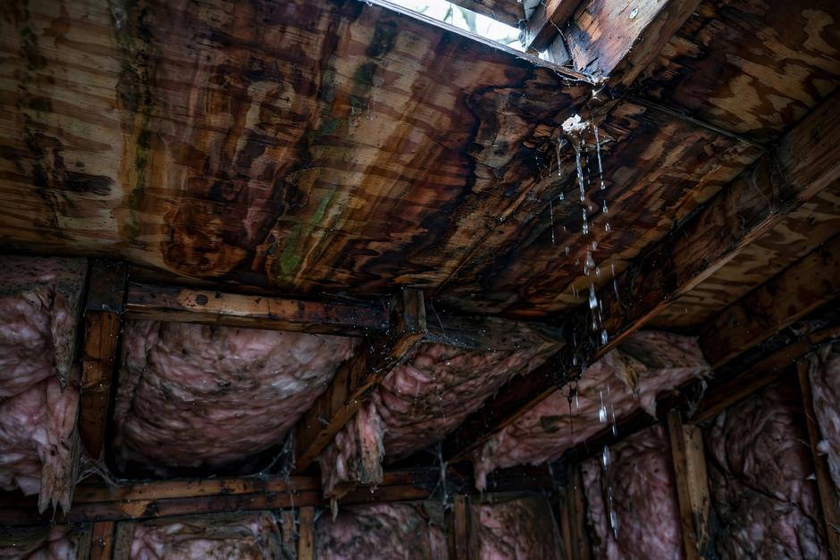
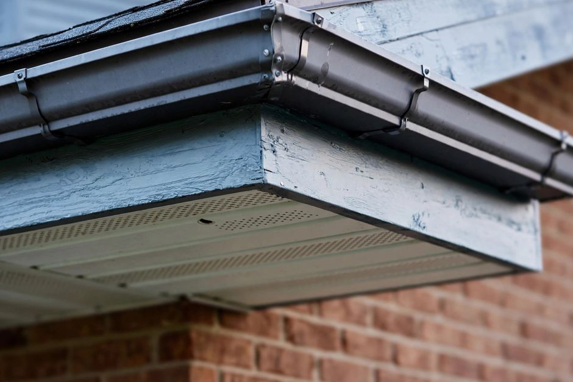
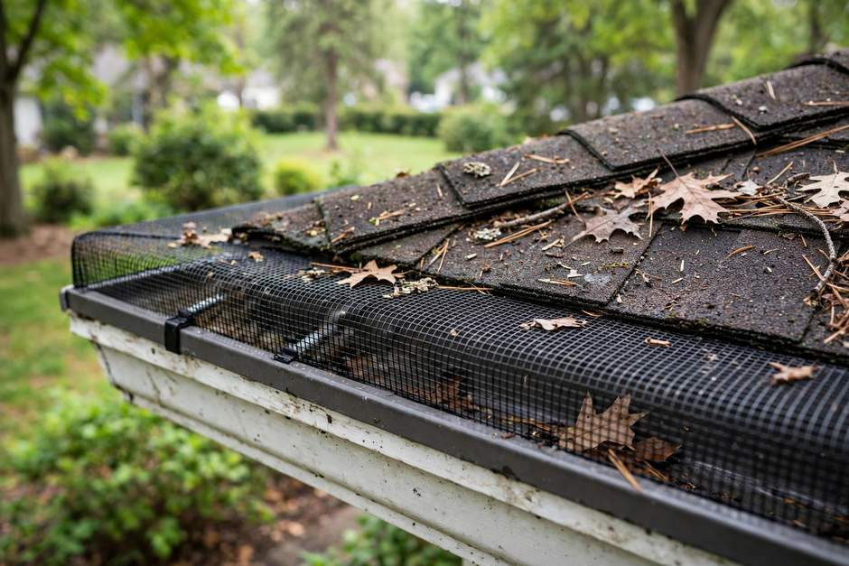

Miner Street, Lee Street, and Ellinwood Avenue
The district centres on these three streets. Streetscape work in the City’s records ran along Miner Street from Graceland Avenue to Pearson Street and along Lee Street to Miner Street.
Downtown Des Plaines is the city’s own district, given a full chapter in the 2019 Comprehensive Plan as its cultural and business core. Its roofs fall into three distinct worlds that must not be described as one: older pitched houses on the residential side streets, flat and low-slope roofs on mixed-use buildings and mid-rise condos, and small flat roofs over storefronts and garages. WP Exterior Inc serves addresses inside the Des Plaines city limits; call (224) 802-4866 during office hours to talk through a specific building.
Describe what you are seeing on the roof. Calls are answered during the office hours listed below.
Call (224) 802-4866 → Phone is the only contact channel. No email or online form.Downtown work starts by identifying which of the three roof worlds a building belongs to, because a pitched house roof, a membrane roof, and a storefront roof are assessed differently. Related reading: preparing a roof for winter in Des Plaines and roof leaks around a chimney. See the full list on the services page.
 Roof ReplacementReplacement on a downtown pitched house often means steep planes, dormers, and valleys, while a mixed-use or condo building may need a flat or low-slope system instead. What a building needs is decided per building, after inspection, and condo roofs are association decisions.View details →
Roof ReplacementReplacement on a downtown pitched house often means steep planes, dormers, and valleys, while a mixed-use or condo building may need a flat or low-slope system instead. What a building needs is decided per building, after inspection, and condo roofs are association decisions.View details →
Roof RepairRepair calls downtown range from flashing at a chimney or sidewall on an older house to a seam or penetration detail on a flat roof. The entry point is found first; the repair follows the roof system that is actually there.View details →
Roof InspectionAn inspection records the surface, flashing, valleys, penetrations, and accessible attic conditions, with photographs and written findings. For downtown buildings it also notes which roof world the building belongs to, so later decisions start from the right system.View details →Emergency Roof RepairEmergency roof repair addresses active leaks and storm breaches. Call during office hours, describe what is happening, and the next step is arranged from there.View details → Storm Damage Roof RepairAfter hail or wind, an inspection records visible damage with dated photographs and written findings for the homeowner’s own records. Hail can bruise a shingle mat without tearing the surface, so a ground-level look is not a substitute for a roof-level check.View details →
Storm Damage Roof RepairAfter hail or wind, an inspection records visible damage with dated photographs and written findings for the homeowner’s own records. Hail can bruise a shingle mat without tearing the surface, so a ground-level look is not a substitute for a roof-level check.View details → Flat Roof RepairFlat and low-slope roofs over mixed-use buildings, mid-rise condos, and storefronts need membrane thinking: seams, ponding, parapets, and equipment curbs. Small flat roofs over garages and alleys are checked the same way, at their own scale.View details →
Flat Roof RepairFlat and low-slope roofs over mixed-use buildings, mid-rise condos, and storefronts need membrane thinking: seams, ponding, parapets, and equipment curbs. Small flat roofs over garages and alleys are checked the same way, at their own scale.View details →
Gutter InstallationGutters, downspouts, fascia, and soffit form the drainage edge of a roof, and their condition affects both pitched houses and flat-roofed buildings. Replacement is sized to the roof it serves and assessed alongside the roof edge.View details → Roof Ventilation InstallationVentilation is part of the roof assembly: intake at the soffit, exhaust at the ridge, and a balance between them. On older downtown houses, blocked soffit vents and mixed vent types are common inspection topics, checked per house.View details →
Roof Ventilation InstallationVentilation is part of the roof assembly: intake at the soffit, exhaust at the ridge, and a balance between them. On older downtown houses, blocked soffit vents and mixed vent types are common inspection topics, checked per house.View details →
Downtown Des Plaines is the commercial and civic core with housing in and around it — not a purely residential area. Each building is approached on its own facts.
Pre-1940 and early-20th-century houses on the residential side streets carry steep, complex pitched roofs. Dormers, valleys, and chimney junctions concentrate flashing details, and those junctions are where inspection attention goes first.
How we help: An inspection checks the flashing at each junction, the condition of the planes between them, and the attic underside for staining, then records findings in writing.
Mid-rise condos and mixed-use buildings carry membrane roofs with parapets and rooftop equipment. These are owner-entity or association decisions, and their details — seams, curbs, deck edges — differ entirely from a pitched house roof.
How we help: The roof system is identified before any scope is discussed, and the decision-maker — owner or association — is confirmed so the conversation starts with the right party.
Floodplain portions along River Road are developed, and the Des Plaines River runs through and along the edge of the district. Flood-zone status is never assumed for an address.
How we help: A FEMA Flood Insurance Rate Map check is made per address where floodplain questions arise, and a new roof is never presented as protection against river flooding.
Stains on a ceiling or wall below a dormer or valley
Shingle granules collecting in gutters or at downspouts
Curling, cracking, or missing shingles on a pitched roof
Standing water, seam gaps, or blistering on a flat roof
Daylight through attic roof boards, or staining on the underside
These anchors come from the City’s own documents, not from a boundary map: no surveyed downtown boundary was verified. Miner Street and Lee Street streetscape limits and the Metropolitan Square redevelopment edges are the closest the record comes to defining the district’s extent.
The district centres on these three streets. Streetscape work in the City’s records ran along Miner Street from Graceland Avenue to Pearson Street and along Lee Street to Miner Street.
The 2003–04 redevelopment roughly bordered by River Road, Perry Street, Lee Street, Pearson Street, and Miner Street, with mid-rise condos and lofts whose roofs are association decisions.
The Union Pacific Northwest line station anchors the district’s transit side. The rail line runs through the district, and the station is a reference point for the streets around it.
The library and the theatre anchor the civic and cultural side of the district, on the same streets as the older houses and the mixed-use buildings.
WP Exterior Inc serves addresses inside the Des Plaines city limits. A Des Plaines mailing address does not by itself prove an address is inside the city: a large unincorporated area east of I-294 carries Des Plaines mailing addresses but has never been part of the city, and permit jurisdiction follows the city limits. If an address sits near an edge or on a border road, its jurisdiction is checked per address before any permit or service claim is made. Downtown addresses sit inside the city limits on the streets named above; an address on River Road or near the river edge still gets its jurisdiction and flood-map checks per address.
Call with the full street address. City maps and county parcel records settle whether an address is inside Des Plaines, and the FEMA Flood Insurance Rate Map is checked per address where floodplain questions arise. No list of ZIP codes is used as a coverage boundary.
“I use WP Exteriors to repaint my roof and do as some tuckpointing on the exterior of my building. Pat and his team were very professional and communicative. They did a good job explaining what needs to be done to my home immediately and what I can plan for in the future. I will definitely be using them in the future.”
Patricia Murray2 months ago
Google review“Patryk was great to work with and extremely professional. I highly recommend WP exteriors and plan on using them again in the future!”
Brian Avila Gaona5 months ago · Roof inspection
Google review“I recently had the pleasure of working with WP Exterior for my roofing needs, and I must say, I couldn't be more satisfied with the outcome. From the moment I contacted them, it was evident that they truly value their customers. …”
Filip Libera2 years ago · Verbatim excerpt
Google reviewCall during office hours if your question is not answered here.
Call (224) 802-4866 →No. Downtown is the city's cultural and business core, with housing in and around it. Older houses stand on the residential side streets, while mixed-use buildings, mid-rise condos, and storefronts fill the commercial streets, and each roof type is assessed on its own terms.
In a condo building the roof is normally a common element, so the association decides. An individual unit owner cannot commission a re-roof on their own, and Metropolitan Square condominiums are covered on this page only, as a complex inside downtown.
No surveyed downtown boundary was verified. This page uses anchors from City documents — Miner Street, Lee Street, Ellinwood Avenue, Metropolitan Square, the Metra station, the library, and the theatre — and does not draw a boundary polygon.
That is checked per address. Floodplain portions along River Road are developed, and the FEMA Flood Insurance Rate Map for the specific address is the record that settles the question. A new roof does not protect a home against river flooding.
No prices are published on this site. What a job involves depends on the building, the roof system, and the scope found on inspection, so call (224) 802-4866 during office hours to talk through a specific address.

Call WP Exterior Inc during office hours and describe the building and what you are seeing. The conversation starts from the specific roof, not from a generic price or timeline.
Call (224) 802-4866 during office hours. Tell us the street address and the roof type if you know it — pitched house, flat or low-slope building, or storefront — and what you are seeing.